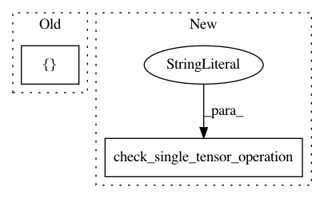

dc83851aca230648c4f75ac1a0d4b9971b2d6aa0,tests/keras/backend/backend_test.py,TestBackend,test_tile,#TestBackend#,430
Before Change
shape = (3, 4)
arr = np.arange(np.prod(shape)).reshape(shape)
check_single_tensor_operation("tile", arr, WITH_NP, n=[2, 1])
check_single_tensor_operation("tile", (2, 5), WITH_NP, n=[5, 2])
// test theano shape inference when
// input shape has None entries
After Change
assert y._keras_shape == K.int_shape(y)
def test_tile(self):
check_single_tensor_operation("tile", (3, 4), WITH_NP, n=2)
check_single_tensor_operation("tile", (3, 4), WITH_NP, n=(2, 1))
check_single_tensor_operation("tile", (3, 4, 5), WITH_NP, n=2)
check_single_tensor_operation("tile", (3, 4, 5), WITH_NP, n=(1, 2))
check_single_tensor_operation("tile", (3, 4, 5), WITH_NP, n=(3, 1, 2))
In pattern: SUPERPATTERN
Frequency: 3
Non-data size: 2
Instances
Project Name: keras-team/keras
Commit Name: dc83851aca230648c4f75ac1a0d4b9971b2d6aa0
Time: 2019-03-16
Author: me@taehoonlee.com
File Name: tests/keras/backend/backend_test.py
Class Name: TestBackend
Method Name: test_tile
Project Name: keras-team/keras
Commit Name: b95fcf7f52aca8ad0b1afb3cfc64c8eed534fafe
Time: 2017-07-29
Author: me@taehoonlee.com
File Name: tests/keras/backend/backend_test.py
Class Name: TestBackend
Method Name: test_repeat_elements
Project Name: keras-team/keras
Commit Name: b95fcf7f52aca8ad0b1afb3cfc64c8eed534fafe
Time: 2017-07-29
Author: me@taehoonlee.com
File Name: tests/keras/backend/backend_test.py
Class Name: TestBackend
Method Name: test_tile